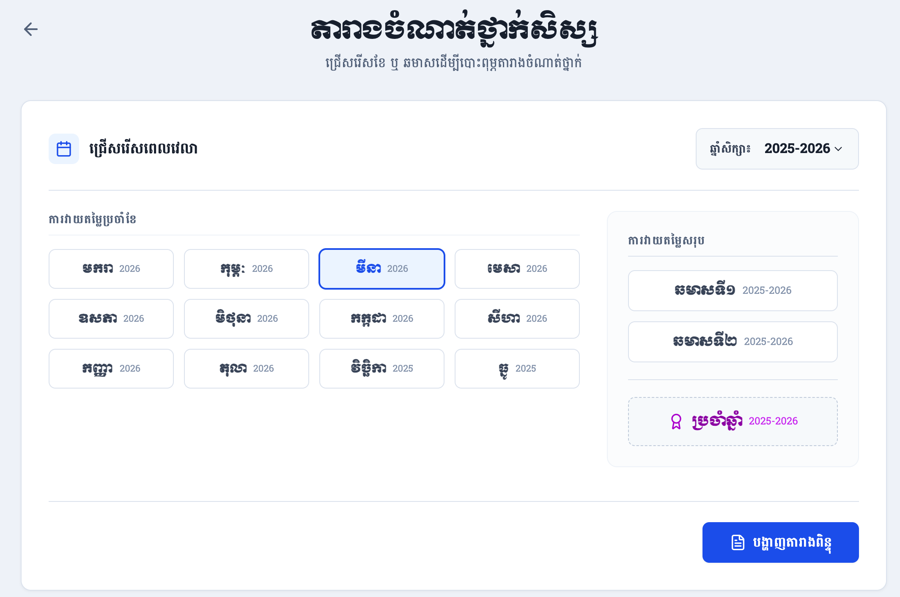
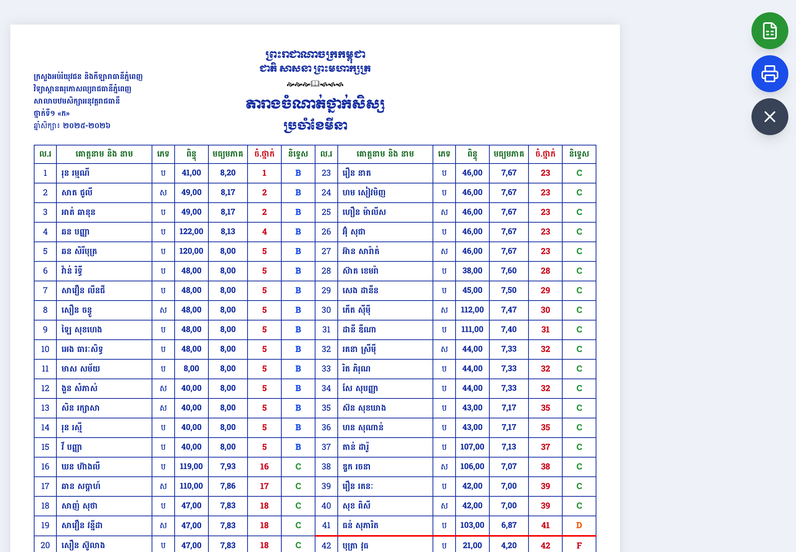
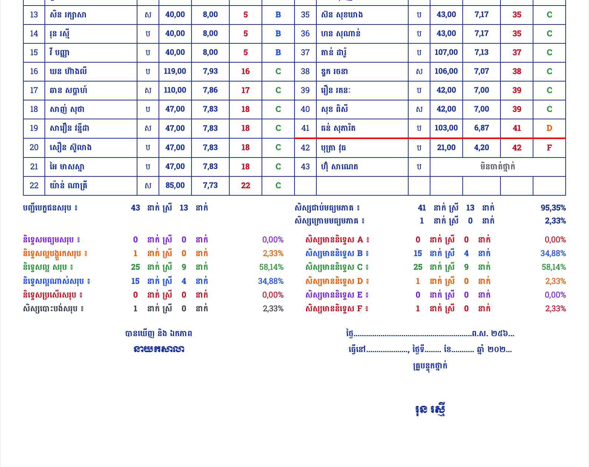

សៀវភៅណែនាំពីរបៀបជ្រើសរើសពេលវេលា ការពិនិត្យមើល និងការបោះពុម្ពតារាងចំណាត់ថ្នាក់សិស្សប្រចាំខែ ឆមាស និងប្រចាំឆ្នាំ។
ផ្ទាំងដំបូង អនុញ្ញាតឱ្យលោកអ្នកជ្រើសរើសឆ្នាំសិក្សា និងប្រភេទនៃរបាយការណ៍ដែលលោកអ្នកចង់បោះពុម្ព៖

ជ្រើសរើសឆ្នាំសិក្សា (ឧ. ២០២៥-២០២៦) នៅជ្រុងខាងស្តាំផ្នែកខាងលើ។ ការប្តូរឆ្នាំសិក្សានឹងធ្វើឱ្យទិន្នន័យឆ្នាំនៅលើប៊ូតុងខែនីមួយៗប្រែប្រួលដោយស្វ័យប្រវត្តិ។
លោកអ្នកអាចចុចជ្រើសរើសខែណាមួយ ឆមាសទី១ ឆមាសទី២ ឬរបាយការណ៍សរុបប្រចាំឆ្នាំ។ ប្រព័ន្ធនឹងទាញយកទិន្នន័យស្របតាមជម្រើសរបស់អ្នក។
បន្ទាប់ពីចុចប៊ូតុង "បង្ហាញតារាងពិន្ទុ" ប្រព័ន្ធនឹងរៀបចំតារាងជាទម្រង់ក្រដាស A4 ត្រៀមរួចជាស្រេចសម្រាប់ការបោះពុម្ព៖

នៅផ្នែកខាងក្រោមនៃតារាង (ទំព័រចុងក្រោយ) លោកអ្នកនឹងឃើញរបាយការណ៍ស្ថិតិលម្អិត និងកន្លែងចុះហត្ថលេខា៖

ប្រព័ន្ធធ្វើការបូកសរុបចំនួនសិស្សជាប់ ធ្លាក់ បោះបង់ និងចំនួនសិស្សទទួលបាននិទ្ទេសនីមួយៗ (A, B, C...) ព្រមទាំងគណនាជាភាគរយរួចជាស្រេច។
មានប៊ូតុងអណ្តែតនៅជ្រុងខាងស្តាំ ដែលអនុញ្ញាតឱ្យលោកអ្នក Print ផ្ទាល់ជាឯកសារ PDF ឬទាញយកទិន្នន័យចំណាត់ថ្នាក់ជា Excel (.xlsx)។
ដើម្បីស្វែងយល់កាន់តែច្បាស់ និងការអនុវត្តជាក់ស្តែងពីរបៀបបោះពុម្ពតារាងចំណាត់ថ្នាក់នេះ សូមទស្សនាវីដេអូណែនាំខាងក្រោម៖